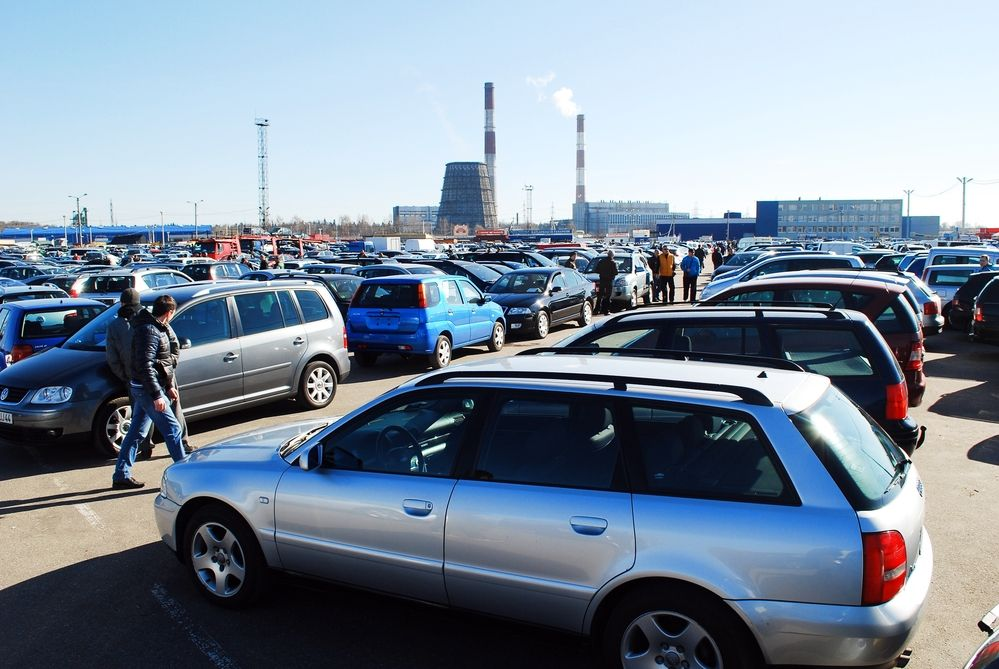

Bieda w interesach Panie!
12.12.2019 | 09:01:00 | Dawid Karpczak
Kompletna bryndza, beznadzieja. Takie słowa padają najczęściej w rozmowach z właścicielami auto-komisów w naszym regionie.
 Pomimo,że ceny samochodów używanych w Polsce spadły w ostatnim roku, klient na placu staje się zjawiskiem coraz rzadszym. Jak mówią sprzedawcy przechodzonych aut, kryzys nie jest chwilowy i nie należy go wiązać wyłącznie ze srogą zimą, choć ta na pewno w jakimś stopniu przyczynia się do pogłębienia aktualnych problemów tej branży.
Pomimo,że ceny samochodów używanych w Polsce spadły w ostatnim roku, klient na placu staje się zjawiskiem coraz rzadszym. Jak mówią sprzedawcy przechodzonych aut, kryzys nie jest chwilowy i nie należy go wiązać wyłącznie ze srogą zimą, choć ta na pewno w jakimś stopniu przyczynia się do pogłębienia aktualnych problemów tej branży.
Jedną z przyczyn jest wywołana ogólnoświatowym kryzysem ostrożność banków w udzielaniu kredytów." Ludzie są zakredytowani na maksa. Od jakiegoś czasu często się zdarza, że przychodzą do nas ludzie zdecydowani na jakiś samochód, uruchamiamy procedurę kredytową, a tu się okazuje, że bank odmawia udzielenia pożyczki" - mówi Waldemar Wanecki z komisu Auto-Polo w Bydgoszczy.
Jak powtarzają zgodnie handlowcy, nie opłaca się jeździć po auta na Zachód, bo po doliczeniu kosztów importu, kosztują podobnie jak u nas. Coraz częściej handluje się więc w polskich komisach samochodami z tzw. rynku wtórnego, kupionymi bądź w rodzimym salonie, bądź za granicą, ale od dłuższego czasu zarejestrowanymii jeżdżącymi w Polsce.
Tendencję tę potwierdza najnowszy raport Instytutu Badań Rynku Samochodowego Samar za 2009 rok. Wynika z niego, że w porównaniu z 2008 rokiem import przechodzonych czterech kółek spadło blisko 40 procent. Co prawda, sprowadziliśmy wtedy rekordową liczbę 1,1 mln pojazdów z krajów UEi innych, ale z drugiej strony wyniki roku 2009 (693 tys. samochodów) są najgorsze od początku naszego przystąpienia do Wspólnoty w maju 2004 roku.
ak mówią w komisach, czasy dominacji jednej marki już minęły. Tak jak marka Volkswagen nie daje dziś gwarancji dobrej sprzedaży, tak samo nie odstrasza już to, co zaczyna się na literę „F” - czyli auta francuskie. Przewagę można zauważyć natomiast wśród aut małolitrażowych. Coraz częściej poszukujemy w komisie maluchów typu opel corsa, nissan micra, toyota yaris czy skoda fabia. Modele te, z racji przyciągania określonego rodzaju klienteli, zyskały sobie miano aut kobiecych.
Komentarze czytelników
Przemyślenia? Reakcje?Zapraszamy do przesyłania opini na naszego maila w zakładce kontakty.Zachęcam do dyskusji w komentarzach poniżej, jednocześnie prosząc o zachowanie etykiety oraz kultury wypowiedzi.

Użytkownik 1 | 10.12.2019| 12:14:26
To wszystko po to by takie komisy zarabiały, same kłamstwa!
Użytkownik 2 | 09.12.2019 | 16:37:19
Pandemia nas wykończy!